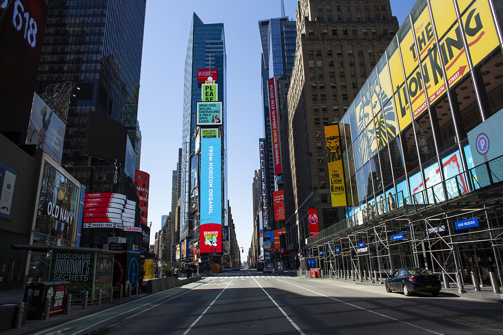

The Absurd Case Against the Coronavirus Lockdown

NEW YORK, NY - APRIL 06: A near empty street in Times Square on April 6, 2020 in New York City.The COVID-19 death toll in the U.S. is approaching 10,000.(Photo by Kena Betancur/Getty Images) | Kena Betancur/Getty Images
By RICH LOWRY
04/15/2020 08:01 PM EDT
Rich Lowry is editor of National Review
and a contributing editor with Politico Magazine.
An irony of the coronavirus debate is that the more successful lockdowns are in squelching the disease, the more vulnerable they will be to attack as unnecessary in the first place.
A growing chorus on the right—from conservative talk radio hosts to Republican lawmakers like Reps.Andy Biggs of Arizona and Ken Buck of Colorado—is slamming the shutdowns as a panicked overreaction and agitating to end them, hoping to drive a wedge between President Donald Trump and his more cautious advisers.
While there’s no doubt there have been absurd lockdown excesses and we should want to return to normal as soon as plausible, the case against the initial shutdowns is unpersuasive—contradictory and based, even now, on denying the seriousness of Covid-19.
A good example of the genre is an op-ed co-authored by former Education Secretary William Bennett and talk radio host and author Seth Leibsohn .It is titled, tendentiously and not very accurately, 'Coronavirus Lessons: Fact and Reason vs.Paranoia and Fear.'Bennett and Leibsohn are intelligent and public-spirited men whom I’ve known for years, but they’ve got this wrong, and in rather elementary ways.
They cite the latest estimate of the Institute for Health Metrics and Evaluation in Washington state that the current outbreak will kill 68,000 Americans.Then, they note that about 60,000 people died of the flu in 2017-18.For this, they thunder, we’ve scared Americans and imposed huge economic and social costs on the country.
This is such an obviously flawed way of looking at the question, it’s hard to believe that Bennett and Leibsohn don’t realize it.
If we are going to have 60,000 deaths with people not leaving their homes for more than a month, the number of deaths obviously would have been higher—much higher—if everyone had gone about business as usual.We didn’t lock down the country to try to
prevent 60,000 deaths; we locked down the country to
limit deaths to 60,000 (or whatever the ultimate toll is) from what would have been a number multiples larger.
By Bennett and Leibsohn ’s logic, we could just as easily ask: Why did we expend all that blood and treasure fighting Hitler when he couldn’t even take Britain or conquer Moscow?Why did we adopt tough-on-crime policies, when crime rates are at historic lows?Why did we work so hard to find a treatment for HIV/AIDs, when so many of the people with the disease now have normal life expectancies?
Of course, it was precisely the actions we took that caused those welcome outcomes.
Consider the perversity of their line of reasoning a different way.If we had shut down the country a month sooner and there had been, say, only 2,000 deaths, then on their terms they’d have even a stronger argument, i.e., 'We did all this and there were only a couple of thousand fatalities?'
In other words, the more effective a lockdown would have been, the more opposed Bennett and Leibsohn would be to it.
As for the flu comparison, it isn’t as telling as Bennett and Leibsohn believe.The flu season stretches as long as from October to April, although it usually peaks between December and February.The 2017-18 season, with 60,000 flu-related deaths, was particularly bad.But the coronavirus might kill a similar number of people—with the country on lockdown.
In the 2011-12 season, 12,000 people died of the flu in the entire country.New York alone has eclipsed that in a little more than a month, and recorded roughly 9,000 deaths the first 15 days of April (again, while on lockdown).In 2018-19, there were 34,000 flu-related deaths in the United States.We are going to surpass that number nationally sometime soon (yet again, while on lockdown).
Why have people reacted so dramatically to this virus, despite the fact that is supposedly comparable to the run-of-the-mill flu?Bennett and Leibsohn have a theory: 'New York City is where the epidemic has struck the hardest.The media is centered in New York City.'
There’s no doubt that New York is always going to get disproportionate attention.But New York City is the biggest in the country, and New York state accounts for 8 percent of the U.S. economy.If New York were an independent state, it would rank as the 11th-biggest economy in the world.What happens there matters.
New York is also, as all of us had no hesitation in recognizing on Sept.11, 2001, part of America.
If the disease struck smaller heartland cities like Omaha, Kansas City and Witchita would Bennett and Leibsohn hope that the story got ignored and no one took any precautions based on major media companies not being headquartered in those places?
Bennett and Leibsohn ignore the key fact that the economy began to shut down before there were widespread official shutdown orders.People voted with their feet, because they were fearful of a highly transmissible, virulent disease.Bennett and Leibsohn may want to portray Americans as lemmings of the media, 'cowering' in their homes, but they acted rationally.If everything had gone on as normal, the outbreak would have been much worse, and we would have shutdowns anyway, just with even worse health outcomes.
The most objectionable part of the Bennett and Leibsohn posture is its sneering attitude toward 'frenzied, panicked' ordinary Americans who have sacrificed so much during this crisis to protect their families and their neighbors.
By all means, let’s open up the economy as soon as we can, but it will require more careful thought than the most fervent critics of the shutdowns have demonstrated during the peak of this epidemic.
Posted On: 2020-04-16T00:01:00
Content Date: 2020-04-16
Download Date: 2021-05-13
Document ID: L0C04BZYF